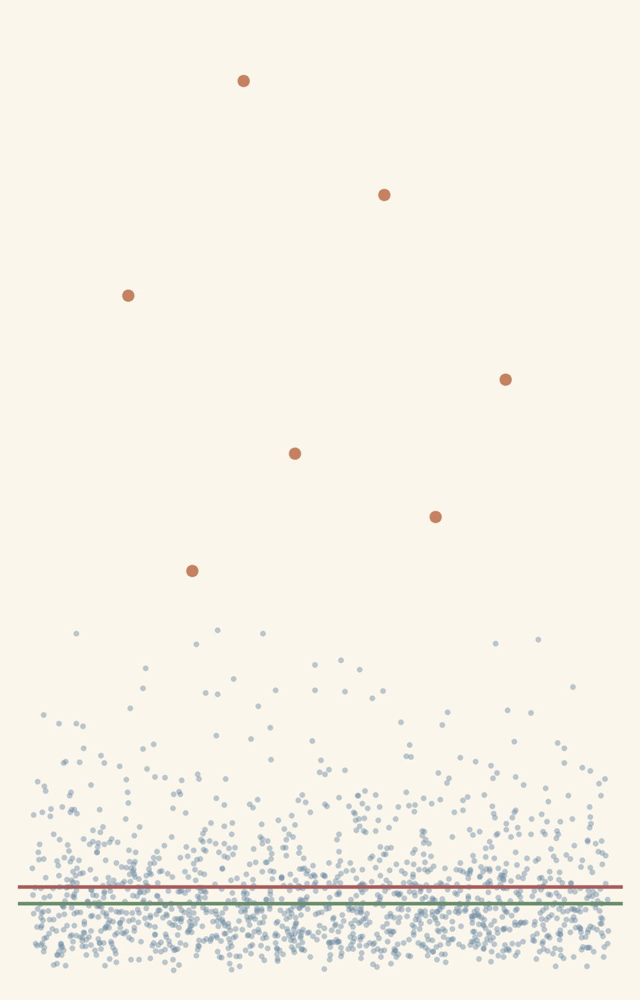
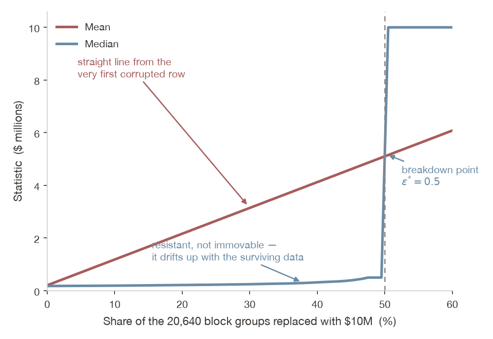
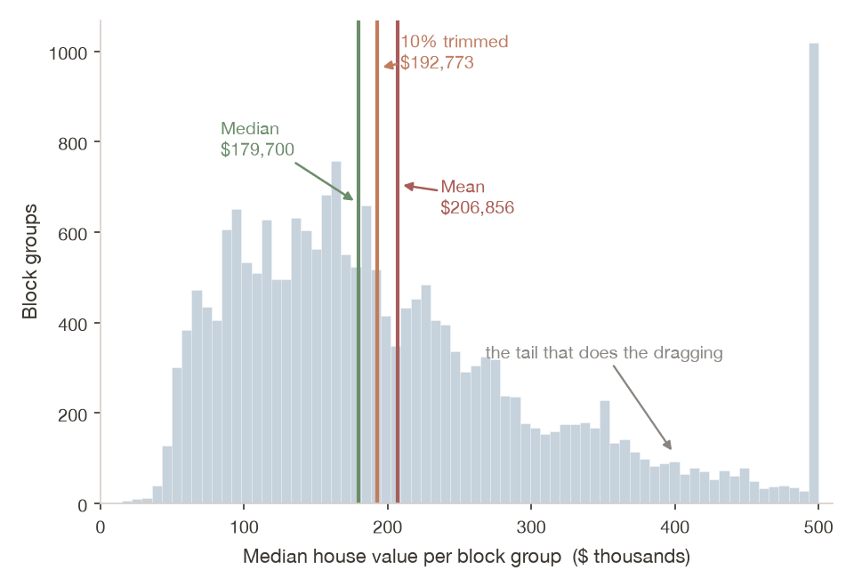
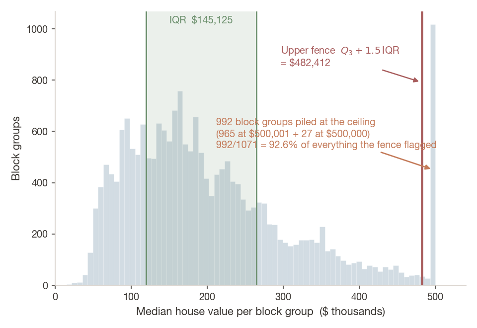
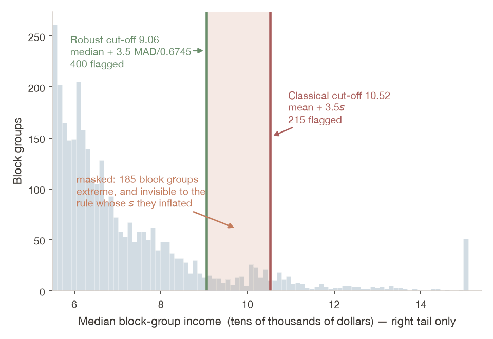
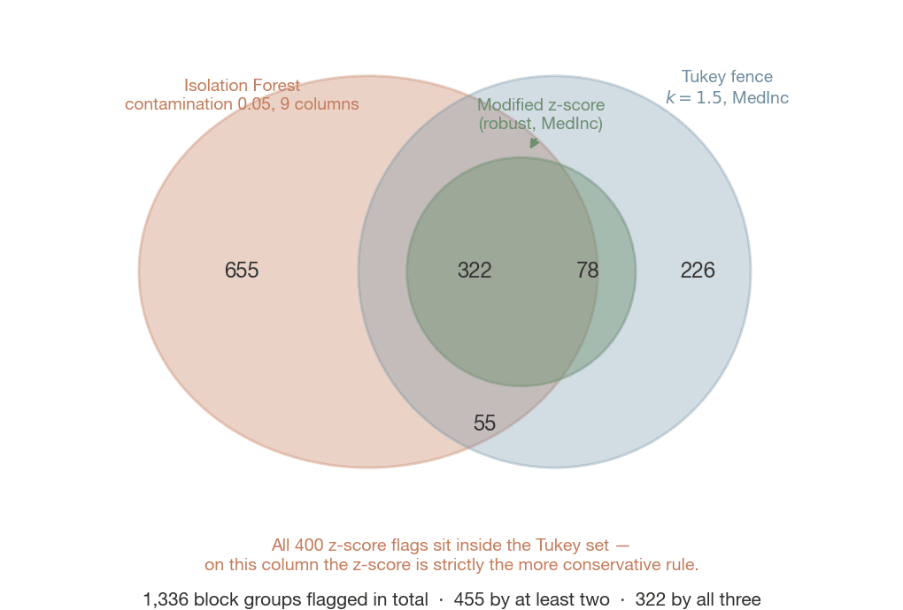

Outlier detection pipelines — and why dropping a point is a modelling choice you have to defend
Dr. Richeng Piao
Department of Economics Northeastern University

Learning Objectives
4.1
Derive why the mean's breakdown point is \(1/n\) and the median's is \(1/2\) — and place the trimmed mean on that scale as a dial you set
4.2
Compute and read robust location and spread, and use the gap between \(s\) and the scaled MAD as a free skew diagnostic
4.3
Detect outliers with fences, robust z-scores and Isolation Forest — and explain why three defensible methods disagree
4.4
Decide. Separate data error, censoring, different population and signal — and defend a treatment in one written sentence
Retrieval Practice
Quick Check 1 — Ch 2. The Laspeyres index is a weighted mean of price relatives. One good's price is mis-keyed by a factor of a thousand. What happens to the index — and does a bigger basket protect you?
Quick Check 2 — Ch 3. Two variables, identical means, identical standard deviations. Which Chapter 3 plot shows you that one of them has a tail and the other does not?
Both answers point the same way. Ch 2 gave you a statistic that can be captured by a single value. Ch 3 gave you the picture that reveals the capture. Today: the tools that survive it.
What Does a Typical Mobile Game Player Spend?
$27.25
mean spend per mobile player, 2025
$81.75B in-app purchases ÷ 3B players
Mobile games took $81.75 billion in in-app purchases in 2025 from about 3 billion players. That is the average on the left. So what does the median player spend in a year?
A) About $18 a year
B) About $9 a year
C) About $2 a year
D) $0.00
Answer: D — Zero. Nobody Average Exists.
$27.25
mean spend per mobile player, 2025
$81.75B in-app purchases ÷ 3B players
$0.00
median spend per mobile player
fewer than 2% ever buy anything
The mean is not a typical player. It is not any player. Over 98% spend nothing, and the entire $27.25 is manufactured by the handful who do — among payers, spending is itself heavily concentrated in a small minority.
And note what a studio must not do with those whales: delete them as outliers. They are the business. Hold that until slide 43.
Fifteen Minutes From This Room
Measure, 2024–25
Median
Mean
Ratio
Greater Boston single-family home
$760,000
—
—
Massachusetts household income
$104,800
$175,192
1.67
Wellesley (02481) household income
>$250,001 censored
$411,739
>1.65
U.S. household net worth
$192,900
$1,060,000
5.50
Look at row three. The Census does not report Wellesley's median — it top-codes it at $250,001. Hold that thought. It comes back at minute 49 as the most important number in this lecture.
What Makes This a Graduate Lecture
The undergraduate version of this material is a toolkit: here is the median, here is the MAD, use them when data is skewed. You already know that.
The graduate version is a decision. Every method you can name will hand you a list of row indices. None of them will tell you what those rows mean.
An outlier is not a data error until you can say why — and dropping it is a modelling choice you have to defend in writing.
By minute 75 you will have written that sentence. That is the end-of-class check.
1 • Why the Mean Lies
One equation, one definition, and a number that goes to zero as your data grows.
Your Data, Right Now
How many unread emails are in your inbox? Open your mail app and read the badge. A rough count is fine.
No name attached. We are about to run the next two slides on this room instead of on California.
0 responses
Your Distribution — and Two Words for the Middle
Mean — add every number up, divide by how many there are. Every value gets a vote, and a big one votes loudly.
Median — line everyone up in order, take the one in the middle. Only the rank counts, not the size.
The gap between those two markers is the rest of today.
The Mechanism, in One Equation
Take \(n\) observations. Replace exactly one of them with a value \(M\):
the wrong value you put in — the typo, the fraud, the billionaire
\(x_{\text{replaced}}\)
the ordinary value it displaced
\(n\)
how many observations you have
\(\bar{x}\)
the mean — before, and after
The damage is \((M - x_{\text{replaced}})/n\). The denominator grows with your sample. The numerator has no upper bound at all.
What big data buys you a smaller share of the damage per bad row
What it does not buy you any bound at all on how bad a row can be
The Same Formula, on This Room
Drop one row and watch which statistic notices. That difference is \((M - x_{\text{replaced}})/n\) with your own \(n\).
Misconception
“With enough data, outliers don't matter.”
This is an argument about the denominator only. At \(n = 1{,}000{,}000\), one $100 million fraudulent transaction still moves the mean by $100.
Whether $100 matters is a question about your application. It is not a question about your sample size, and no amount of data will answer it for you.
Large \(n\) shrinks the damage per bad row. It never bounds it.
Breakdown Point
Breakdown point: the largest fraction you can replace with arbitrary values before the estimator goes anywhere.
Definition. The breakdown point \(\varepsilon^{*}\) of an estimator is the largest fraction of the sample you can replace with arbitrary values before the estimator can be driven anywhere at all.
Mean
\(1/n\)
One row. And this goes to zero as \(n\) grows — the mean gets less robust in the limit
Median
\(0.5\)
Until half the sample is corrupt, the middle rank is still held by a real observation
Trimmed mean
\(\gamma\)
A dial. At \(\gamma=0\) it is the mean; at \(\gamma=0.5\) it is the median
The Cliff Is Not a Metaphor

California Housing, \(n = 20{,}640\) block groups; corrupted rows set to $10,000,000.
Measured: California Housing
20,640 census block groups, 1990 Census. Our recurring dataset — it returns in Ch 19 as a prediction target. Today it is a distribution.
$206,856
Mean
$179,700
Median
1.15
Mean / median
0.98
Skewness
A ratio of 1.15 is mild next to U.S. household net worth at 5.50 — and it is still enough to move a policy conclusion. Now let us break it on purpose.
Contaminate 1% and Watch
206 block groups replaced with $1,000,000 — deliberately beyond the $500,001 ceiling — seed 42:
Be precise about the median: it moved. Textbooks that say “the median does not move” are teaching a slogan. Pushing 206 rows to the top of the ordering drags the midpoint up a few positions. The median is resistant, not immovable — \(\varepsilon^{*}=0.5\) is a claim about 50% contamination, not about 1%.
Poll 1 — Where Does the Dial Sit?
What is the breakdown point of a 10% trimmed mean?
A) \(1/n\) — it is still an average, so one bad row still moves it
B) 0.10
C) 0.50 — trimming makes it behave like a median
D) It has none; trimmed means are fully robust
Answer: B — It Equals \(\gamma\)
A trimmed mean's breakdown point equals gamma. Trim ten percent and 10.1% contamination still drives it anywhere.
Trimming discards the top and bottom 10% before averaging, so up to 10% contamination is thrown away before it can touch the sum. At 10.1% the corrupted values survive into the average and it can be driven anywhere.
Common mistake: A — the extreme values never enter the sum at all. C is the \(\gamma = 0.5\) case, which is the median.
Robustness is a dial you set, not a property you either have or lack. And a dial setting is a decision you have to report.
2 • Robust Location and Spread
Four statistics, one free diagnostic you should compute every single time.
The Trimmed Mean
The trimmed mean is a dial between mean and median, and the dial setting is the breakdown point.
What you gain a breakdown point of \(\gamma\) instead of \(1/n\)
What you pay efficiency, if the data really was well behaved
scipy.stats.trim_mean(x, 0.10) — and the 0.10 goes in the methods section.
The Same Dial, On This Room
\(\gamma\)trim from each end
Walk \(\gamma\) from 0 to 0.50 and watch the number leave the mean and arrive at the median. The setting you stop at is your breakdown point.
Robust Spread: IQR and MAD
IQR is the width of the middle half. MAD is the median distance from the median.
$$\hat{\sigma} = 1.4826 \cdot \text{MAD}$$
Interpretation: on normal data MAD \(\approx 0.6745\,\sigma\), so scaling by \(1/0.6745 = 1.4826\) puts the MAD on the same ruler as a standard deviation.
IQR = interquartile range · MAD = median absolute deviation
Robust Spread, On This Room
One row leaves. Watch which of the four spreads notices and which barely blinks.
All Six, Measured on the Same Column
LOCATION
Mean
$206,856
5% trimmed mean
$198,983
10% trimmed mean
$192,773
Median
$179,700
SPREAD
Standard deviation \(s\)
$115,396
IQR
$145,125
MAD
$68,400
Scaled MAD \(\approx\hat\sigma\)
$101,410
Watch the left column walk from the mean to the median as \(\gamma\) turns up: 206,856 → 198,983 → 192,773 → 179,700. That is the dial, made of numbers.
Three Locations, One Distribution

The Same Three Locations, on This Room
Your inboxes, not California. The order is always median ≤ trimmed mean ≤ mean when the tail is on the right — and the gap between the outer two is the tail's whole influence.
The Free Skew Diagnostic
$115,396
standard deviation \(s\)
vs
$101,410
scaled MAD \(\approx\hat\sigma\)
On symmetric data these two agree. When they separate — here by 14% — your data is telling you the standard deviation is being inflated by a tail.
One line of code. Compute it every time you compute a standard deviation.
Poll 2 — Magnitude or Order?
Replace the single most expensive block group's value with $10 billion. Which statistics move by more than one dollar?
A) The mean only
B) The mean and the standard deviation
C) The mean, the standard deviation and the IQR
D) All of them — every one of these is computed from all 20,640 rows
Answer: B — Only the Two That Use Magnitude
Only the mean and s use magnitude. Rank-based statistics cannot see a large value become larger.
The mean and \(s\) use the raw magnitude, so both run off to infinity with \(M\). The median, IQR and MAD depend only on rank — and replacing the largest value with an even larger one changes nobody's rank. Nothing moves.
Common mistake: D. The median is computed from all the rows — but only their ordering survives the computation.
Magnitude versus order is the whole of robust statistics — and it is why the decision trees in Ch 19 get robustness for free.
Advanced Treatment
What “robust” means when you write it down properly.
Finite-Sample Breakdown Point
QUESTION 1 OF 2How MANY bad points can you survive? Answer: one number between 0 and 0.5. \(\varepsilon^{*}=1/n\) means one row is enough; 0.5 means half your data.
how much of it you mix in — then shrink to nothing
\(\text{IF}\)
the damage per unit of that contamination
An observation at $1 trillion has exactly the same influence on the median as one at $500,001. Both are above — and above is all the median records.
3 • Detection I — Fences and Masking
Where the rule that finds the tail is built out of the tail.
Tukey Fences
On normal data this rule flags about 0.7%. Here it flags 5.19% — and that is a fact about economics, not a failure of the rule. Note also that the lower fence is negative, so it can never bind: house prices are positive.
The Fence, Built From Your Inboxes
Every ingredient comes from the middle of your own data — two quartiles and the width between them. The flagged inboxes had no say in where their fence went.
Look Where They Actually Are

And Where Are Yours?
California’s flags were 992 rows stacked on one value — a recording rule, not a fact about houses. Ask the same question of yours before you touch them.
Two Rulers for the Same Rule
Same rule, different ruler: centre on the median, scale by MAD, and the tail cannot bend it.
$$z_i = \frac{x_i - \bar{x}}{s}$$
Classical. Distance from a centre the outliers moved, in units of a spread the outliers inflated.
Robust. Identical rule, a ruler that the tail cannot bend.
This is Bug 1 in your lab: a function called modified_zscore that quietly computes series.mean() and series.std(). The docstring is right. The code is not.
The Robust Rule Flags More
Masking: the tail inflates the very ruler built to measure it, so the classical rule flags fewer.
California Housing MedInc, \(n = 20{,}640\), skewness 1.65, threshold 3.5:
Rule
Cut-off
Flagged
Classical (mean, \(s\)) — broken
10.52
215 (1.0%)
Robust (median, MAD) — fixed
9.06
400 (1.9%)
185 block groups live between 9.06 and 10.52. They are extreme, and the classical rule cannot see them — because they personally inflated \(s\) far enough to push the threshold out past themselves. This is called masking.
The Masked Region

Both Rulers, on Your Inboxes
Same threshold, same data, two different rulers. The gap between the cut-offs is the masked region — inboxes the classical rule cannot see because they helped build its \(s\).
Poll 3 — Why Fewer?
At the same threshold of 3.5, the lab's broken z-score (mean and SD) flags 215 and the fixed robust version (median and MAD) flags 400. Why does the non-robust rule flag fewer?
A) The mean sits below the median here, so the threshold lands lower
B) The extreme values inflated \(s\), pushing the cut-off out past them — they hid themselves
C) The broken version silently drops rows with missing values
D) Different random seeds — re-run it and the counts will swap
Answer: B — Masking
Masking. Classical cut-off 10.52 flags 215; robust 9.06 flags 400. The 185 between are hidden.
The tail is used to build the ruler that is supposed to measure the tail. Cut-offs: 10.52 classical, 9.06 robust; 185 observations in between.
Common mistake: A gets the skew direction backwards — the mean is 3.87 against a median of 3.54, so it sits above — and it reasons about the wrong quantity anyway. The centre barely matters here; the spread does all the damage.
A robust detector is not a stricter detector. It is one whose threshold does not depend on what it is trying to find.
Discussion 1 — The 992 assesses LO 4.3, 4.4
Tukey flags 1,071 block groups above $482,412. Of those, 992 — 92.6% — sit at a ceiling value: 965 at $500,001 and 27 more at exactly $500,000. The dataset top-codesMedHouseVal at 5.00001. Every block group truly worth $520,000 or $3 million was written to disk as the same number.
Think (1 min) → Pair (2 min) → Share (1 min)
Prompt A. Are those 992 rows outliers? Answer in the form: “they are ___, which is a different thing, because ___.”
Prompt B. You drop all 1,071 and regress house value on median income. Which way does your slope move, and why?
Example Answers — The 992
Prompt A. They are censored, which is a different thing from extreme, because the value you see is a property of the recording, not of the neighbourhood. Top-coding wrote every block group truly worth $520,000 or $3 million to disk as the same number.
Prompt B. The slope attenuates — and you manufactured that bias yourself. Dropping all 1,071 deletes the top of the price distribution, which is exactly the highest-income block groups, so you have truncated the outcome on a variable correlated with the regressor.
And the scale is smaller than it looks: only 106 of the 1,071 are genuine candidates — 0.5% of the data, not 5%.
4 • Detection II — Isolation Forest
Unusual combinations, and three methods that will not agree with each other.
One Column at a Time Is Not Enough
A two-bedroom home at $500,000
unremarkable in San Francisco
A home with ten rooms
unremarkable in a suburb
A two-bedroom home with ten rooms
strange everywhere
No univariate fence will ever see the third one, because it is not extreme in any single column. Its marginal distributions are perfectly ordinary. What is anomalous is the combination.
Isolation Forest: Twenty Questions
Ordinary in every variable, strange as a combination — Isolation Forest finds those.
A Tukey fence asks one variable at a time. Sixty homes — bedrooms against total rooms.
The idea. Pick a variable at random, pick a cut point at random, ask which side this home is on — repeat. How many questions until it sits alone? One game is a tree; a hundred averaged is the forest.
Isolation Forest · contamination
Isolation Forest: Invert the Question
Invert the question: do not model normality — ask how few random splits isolate a point.
$$s(x, n) = 2^{-\,E[h(x)] / c(n)}$$
Interpretation: \(E[h(x)]\) is the point's average depth across the trees and \(c(n)\) the average depth of a typical point, so the exponent reads “how shallow was this point, relative to normal.”
\(s \to 1\) isolated at once — anomalous
\(s \approx 0.5\) typical
\(s \to 0\) buried in a dense cluster
Linear time. No distance calculations. No density estimation. (Liu, Ting & Zhou 2008.)
Isolation Forest · contamination
How Many Cuts Does It Take?
The tree you are building — 0 cuts
ODD HOME
—
mean cuts, 100 trees
NORMAL HOME
—
mean cuts, 100 trees
Four Lines in scikit-learn
from sklearn.ensemble import IsolationForest
features = df.drop(columns=["MedHouseVal"]) # all 8 predictors
iso = IsolationForest(n_estimators=100, contamination=0.05, random_state=42)
iso.fit(features)
labels = iso.predict(features) # -1 = outlier, 1 = inlier
scores = iso.decision_function(features) # more negative = more anomalous
1,032
flagged — 5.0% of 20,640
[−0.2116, 0.1565]
anomaly score range
contamination=0.05 did not discover 5%. It asked for 5%. That parameter is a domain judgment you must defend, not a statistical estimate.
The Parameter That Is Not a Parameter
contamination is not estimated. It is asserted — and the model then flags exactly that fraction.
contamination=0.05 does not estimate how many outliers you have. It asserts it — and the model then flags exactly that fraction.
10,320
block groups flagged at contamination=0.5
exactly 50.0% — Bug 3 in your lab
1,032
flagged at contamination=0.05
exactly 5.0% — on any dataset you hand it
It is a prior. Priors get written down and justified — which is why your lab's class raises ValueError rather than accepting 0.8.
Three Methods, One Dataset
Univariate rules on MedInc; Isolation Forest on all nine numeric columns.
Method
Flagged
Share
Modified z-score (robust, threshold 3.5)
400
1.9%
Tukey fence (\(k = 1.5\))
681
3.3%
Isolation Forest (contamination=0.05)
1,032
5.0%
Union of all three
1,336
6.5%
Flagged by at least two
455
34.1% of the union
Flagged by all three
322
24.1% of the union
Roughly two thirds of everything flagged was flagged by exactly one method. There is no consensus here to appeal to.
1,336 Flags, 322 Agreements

Economist at Work — Detection as Infrastructure
U.S. Treasury, Office of Payment Integrity
$652.7M → $4B
fraudulent payments prevented or recovered, FY2023 to FY2024, by screening disbursements for anomalous patterns.
Stripe Payments Foundation Model
59% → 97%
card-testing detection, with no rise in false positives — over 1,000 signals evaluated per transaction. (May 2025.)
Notice what neither of them is doing. They are not removing outliers. They are finding them. The outliers are the product.
Poll 4 — What Do You Ship?
A policy team needs one is_outlier column from you tomorrow. Three methods flagged 1,336 rows between them and agreed on 322. What do you ship?
A) The union — 1,336 rows. Catch everything; false positives are cheaper than misses
B) The intersection — 322 rows. Only flag what all three agree on
C) One method, chosen because its assumptions match the question, with its parameters documented
D) A majority vote — the 455 rows flagged by at least two methods
Answer: C — An Output Is Not a Decision
Union, intersection and majority vote are outputs, not decisions. The agreement rate is a diagnostic.
A, B and D are all outputs. None of them is a decision. The agreement rate is a diagnostic — it tells you the methods are measuring different things — not a selection rule.
Why D is the trap: two of these methods read one column and the third reads nine. A majority vote across them is averaging answers to different questions.
Ask instead: is the concern a mis-keyed value (robust z), a genuinely extreme level (Tukey), or an implausible combination (Isolation Forest)? Then say which, in the appendix.
5 • The Decision
Four questions, four treatments, and one sentence you have to be able to write.
Four Questions, In This Order
Ask in order: data error, measurement artefact, different population, genuine. Only then choose a treatment.
1
Is it a data error? A home listed at $1 or $999,999,999 is a placeholder. Fix it at source.
2
Is it a measurement artefact? Top-coding, censoring, fields winsorised at collection. Our 992. These are not extreme — they are unknown.
3
Is it from a different population? A $10M estate in a starter-home dataset is a different market. Consider stratifying, not dropping.
4
Is it the signal? In fraud work the outliers are the fraud. In crisis research they are the crises. In inequality research they are the question.
Then, and Only Then, Choose a Treatment
Keep
and model it
Winsorize
cap at a percentile
Trim
exclude from the estimate
Remove
delete the row
Winsorize versus trim. Trimming removes the extreme observations, so \(n\) falls. Winsorizing replaces them with the nearest surviving percentile, so \(n\) is preserved along with everything that depends on it.
Neither is silent. Both go in the methods section with the percentile stated.
When the Mean Is Not Even the Right Target
Geometric mean is roughly arithmetic minus half the variance. Volatility is a permanent drag on compounding.
Interpretation: volatility is a permanent drag on compounding. About half the variance never reaches the investor.
12.4%
arithmetic mean
17.1%
standard deviation
1.5 pts
variance drag
10.9%
geometric = realised CAGR
Over 2006–2025, $10,000 becomes $103,426 at the arithmetic rate and $79,205 at the geometric one. A $24,221 difference produced entirely by which average appears in the marketing material.
The test case: +100% then −50% is an arithmetic mean of +25% and a geometric mean of 0%. The investor is where they started.
Source: Damodaran, Historical Returns on Stocks, Bonds and Bills, NYU Stern (Aug 2026) — S&P 500 including dividends, annual returns 2006–2025.
The Portable Artefact
Everything on the last three slides is a set of decisions — which means it can be code.
method is a constructor argument, not a copy-pasted cell
thresholds are named parameters with defaults you can defend
an invalid contamination=0.8 raises ValueError instead of quietly flagging 80% of your data
summary() returns the dict you paste into the appendix
Deleting rows by eye is not reproducible. A configured object is.
Discussion 2 — Defend the Drop assesses LO 4.4
Block group #14,732: median income at the 99.9th percentile, median value at the $500,001 cap, 3 people per household, coastal. You have decided to exclude it.
Think (1 min) → Pair (1 min) → Share (1 min)
Write the one sentence that goes in your methods appendix. It must name:
(a) which of the four questions this row failed
(b) the treatment you chose
(c) what a referee should expect if they disagree with you
Example Answers — Defend the Drop
Strong
“Block groups at the $500,001 top-code (n = 992, 4.8% of the sample) are censored rather than extreme; we retain them and report a Tobit specification alongside OLS, and note that dropping them attenuates the income coefficient by construction.”
Weak
“We removed outliers using standard methods.”
The test: could a referee reproduce your sample from your sentence?
Key Takeaways
1. The mean's breakdown point is \(1/n\) and it goes to zero as your sample grows. Big data dilutes each bad row without bounding any of them.
2. The median is resistant, not immovable. It moved $1,600 under 1% contamination. Say the true thing.
3. Robust is not conservative. At the same threshold of 3.5, the robust rule flagged 400 where the classical one flagged 215 — because the classical rule let the tail set its own threshold.
4.90% of California's “outliers” were a top-code. Detection tells you which rows are unusual. Only you can say whether unusual means wrong, censored, foreign, or interesting.
5. Three defensible methods agreed on 322 of 1,336 flags. No method decides for you, so make the decision explicit, parameterised and testable.
6. Dropping a point is a modelling choice. It belongs in the methods section with a number attached, not in a cleaning cell with a comment.
End-of-Class Check
Attendance is the check-in on your device. Enter your NUID once in any poll today, then vote. That is the record — no Canvas quiz and no access code.
If you voted in a poll today and entered your NUID, you are marked present. If you never got the prompt, tell me before you leave rather than after.
One question to take with you, not for credit: you compute the mean household income for 10,000 households and one row was entered with an extra zero. Which of your two summary statistics moved, and by roughly how much?
Looking Ahead — and Lab 4
Ch 5 — variance formalised, and heavy-tailed distributions where the mean does not merely mislead: it does not exist.
Ch 7 — a confidence interval for a median, which you cannot write down analytically the way you can for a mean.
Ch 14 — M-estimators, quantile regression, least trimmed squares: this philosophy applied to a slope instead of a centre.
Ch 19 — trees split on rank, not magnitude. Poll 2's answer, generalised into an algorithm. California Housing returns.
Applied, right now. Boston Fed WP 25-12 (Llanes, Thompson & Volz 2025): decades of contradictory findings on whether the rich save more, clarified by measuring expanded wealth against direct lifetime earnings — the ratio is flat near 0.25 through the 60th percentile, then climbs from the eighth decile to 1.01 in the top 2%.
Lab 4 — lab-ch04-diagnostic.ipynb. Three bugs, then build the OutlierDetector module, then the three-method comparison and the 200-word memo. The ordering rule: decide what an outlier is for this question before you run anything that flags one.